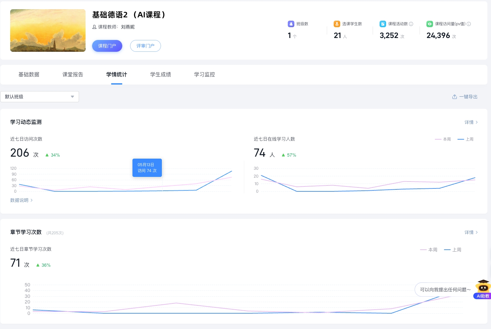
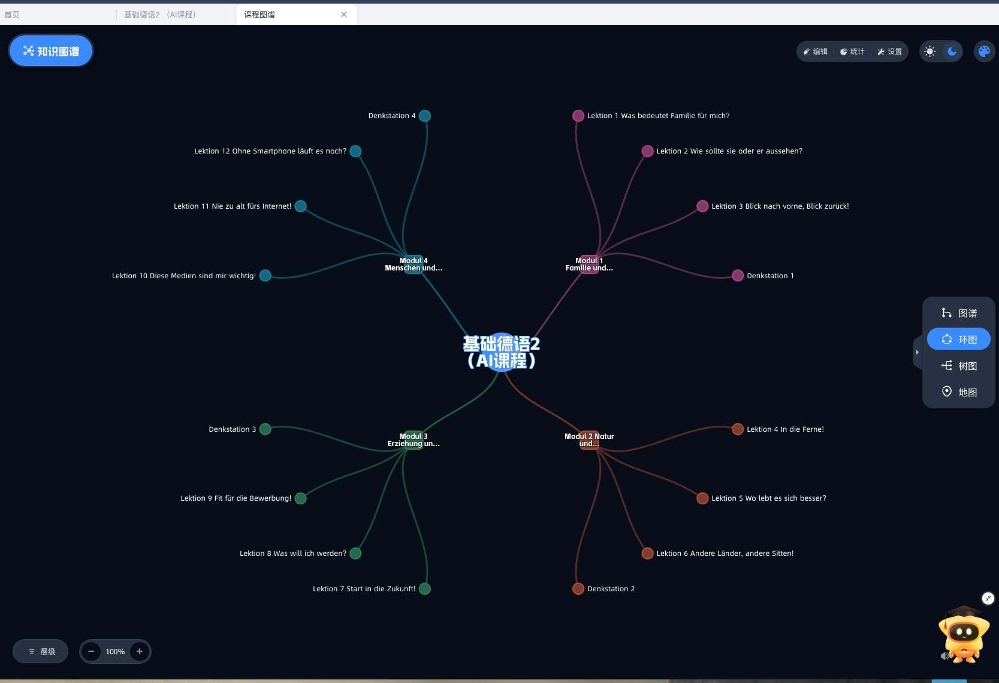
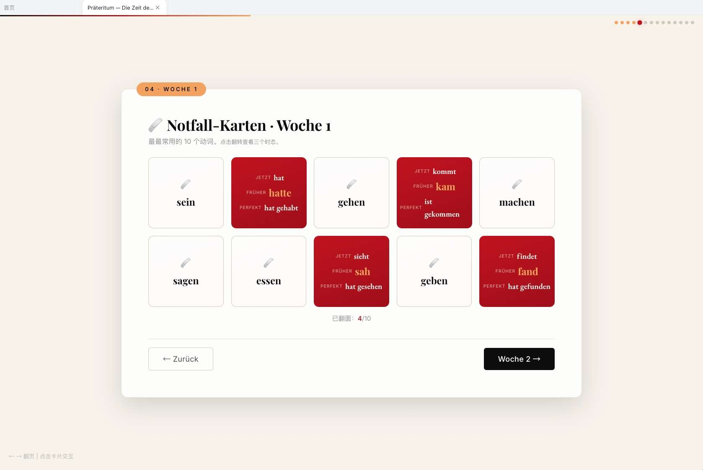
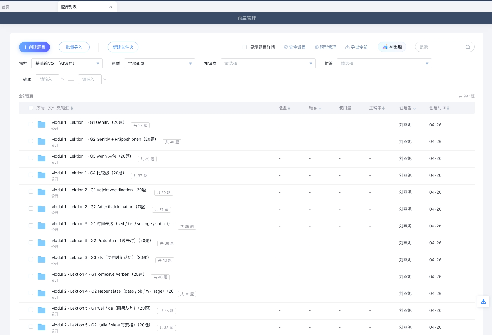
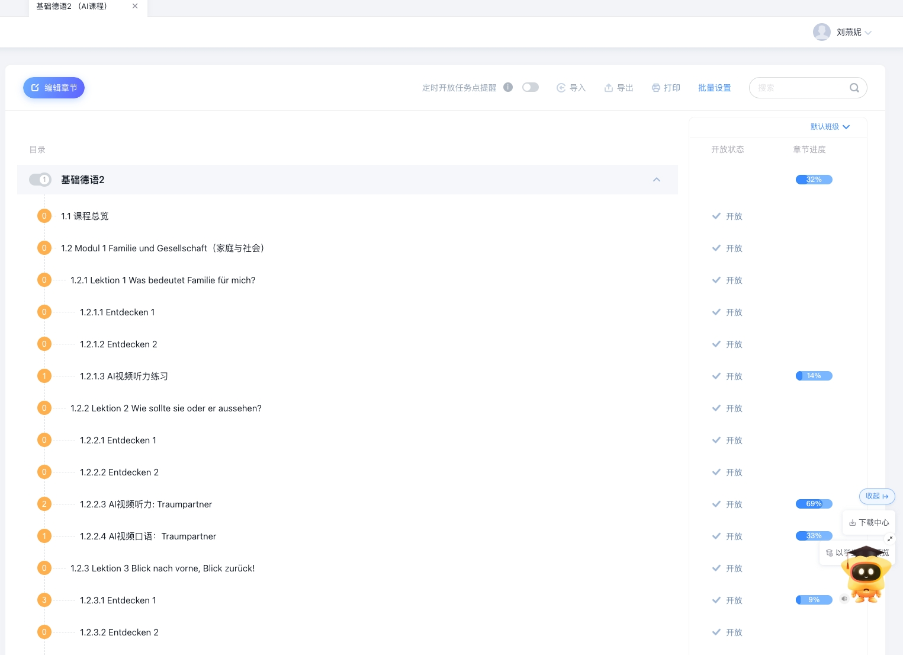
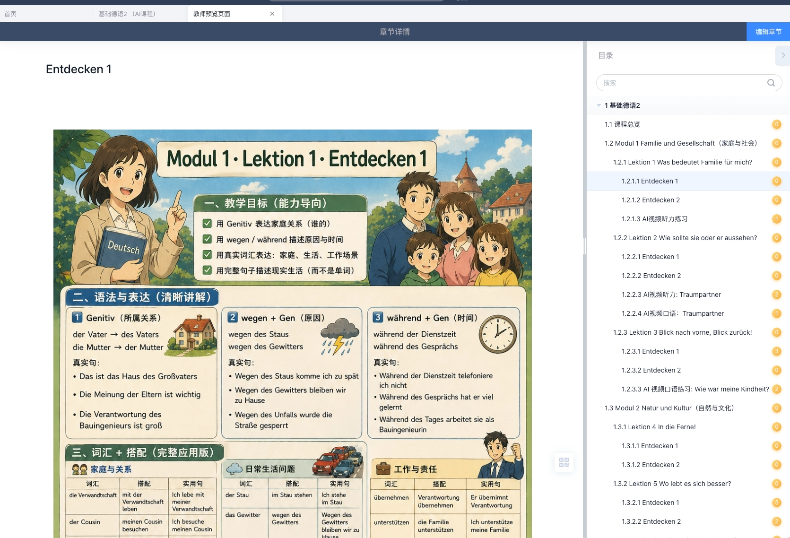

基于学习通数据诊断缺口
真实学情+4类画像
4模块12课·课程图谱
数字人·微视频
交互数据+设计
从解题到提问
掌握度87%但任务点均3.3/9（76%学生完成5个以下）。「健康·情感·创新」维度空白。
85%学生80+分，但论坛仅3话题48回复。高认知低创新。
AI智能体会话0次，仅3人向AI提问8次。
PV 24,396但AI会话=0。AI停留在教师端（备课+出题）。
诊断结论：非认知维度空白、创造性表达缺失、AI交互0启动——三项叠加=AI+升级第一性出发点。
学生无基础，AI辅助以中文为媒介、德语为结果。
发音模仿+对话练习需即时反馈。API延迟和成本瓶颈。
德语教材语料远少于英语。87知识图谱是核心资产。
公式：零起点×强互动×有限语料=需定制化方案

AvsB对照组·每4周一迭代
L1 Familie für mich · L2 Sie oder er · L3 Blick zurück · Denkstation1
L4 In die Ferne · L5 Wo lebt es besser · L6 Andere Länder · Denkstation2
L7 Start in die Zukunft · L8 Was will ich · L9 Fit für Bewerbung · Denkstation3
L10 Medien wichtig · L11 Nie zu alt · L12 Smartphone · Denkstation4

WissensgraphInterakt.MaterialKI-VideoKI-Fragen
人机协同：AI草案→教师审核→嵌入智能体→课后24h迭代
定位：零起点学生标准发音参照系。
Prompt→「为A1级设计3分钟Umlaut ä/ö/ü讲稿，双语字幕·口型示范·错误对比·小练习」
年轻母语者，口型同步，适配微视频
词汇级：标准音频+慢速+口型 | 句级：跟读评分+纠音
教材语料训练，检索增强回答。如"der/die/das规律"→查+推
词汇·语法·表达·发音四维评分→等级→推送
出题Flow·纠音Flow·对话Flow·项目Flow
教学嵌入+界面优化+主动推荐→每课1问

验收：成果为可视化产品（仪表盘/纪录片/报告），学生借DeepSeek完成。



✅ 教师端已就绪 — 图谱87点·互动课件·AI视频·AI出题
🔄 学生端建设中 — 学情分析闭环·智能体矩阵·数字人
🚀 核心挑战 — AI会话0→激活学生端 · 从解题到提问
下一阶段：从"AI赋能教师"走向"AI赋能学生"